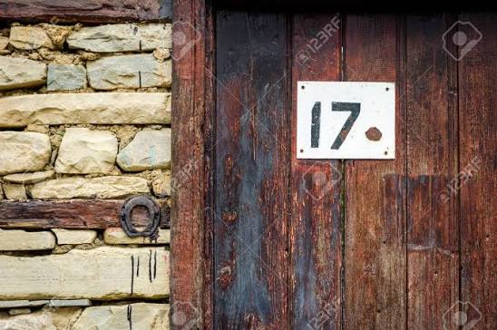

Há alguma coisa escrita na fotografia.
17
Uma gravação antiga.
A gravação revela o número:
10
Relatório encontrado junto aos arquivos.
O documento parece estar relacionado ao diário encontrado anteriormente.
No final da página existe uma anotação:
2015
As três pistas formam uma data.